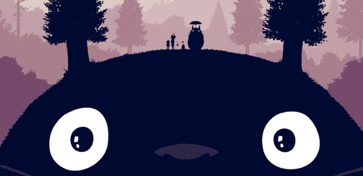

O Studio Ghibli foi fundado em 1985 por Hayao Miyazaki, Isao Takahata, Toshio Suzuki e Yasuyoshi Tokuma, logo após o sucesso de Kaze no Tani no Nausicaä no ano anterior...
O logotipo da empresa é Totoro, um personagem do filme Tonari no Totoro, lançado em 1988